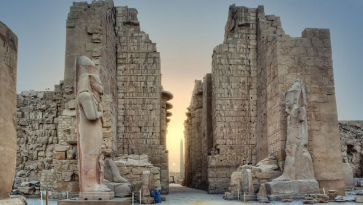

this is karnak temple
the Karnak Temple , is a group of temples, buildings and columns, where expansion and construction continued since the Pharaonic era, specifically the kings of the Middle Kingdom until the Roman era in Luxor in Egypt on the eastern coast. The temple was
built for the divine trinity Amun (Amun-Re in modern times), his wife the goddess Mut and their son the god Khonsu; Each of them has a temple belonging to the Karnak temple complex. Sometimes tourists and non-specialists mean only
The temple was named after the city of Karnak , which is a modern name distorted from the Arabic word Khornaq , which means the fortified village, which was given to many temples in the area during this period. While the Temple as initially known as “Bar
Amun,” meaning the Temple of Amun or the House of Amun. During the Middle Kingdom , it was called Ibt Sut , which means the most chosen of places (sometimes translated as the chosen spot). This name was found on the walls of Senusret ’s cabin.
The first is in the third pylon. The temple was also known by many names, including Nisut-Twa , which means the throne of the two states, and Ibet Iset , which means the most magnificent residenc
information about it
With the arrival of the kings of the Eleventh Dynasty to rule all of Egypt, Karnak was already considered a sacred land, it seems that a form of worship of the god Amun had taken from Karnak a place before the unification of the country , which had a
direct impact on increasing the power and wealth of Amun and gradually merging it with sun godra. The White Chapel of Senusret I and the court of the Middle Kingdom
The new development by the Antiquities Authority restored all the scattered parts of all the temples inside Karnak and developed the front area of it from a vast area to give an aesthetic appearance in front of the facade of the temples and to take
pictures of the entire facade of the temples and several rest stops for visitors. How much sound and light are the most beautiful things that make the trail speak and reveal what is not accurately seen with the naked eye at nigh.

.webp)